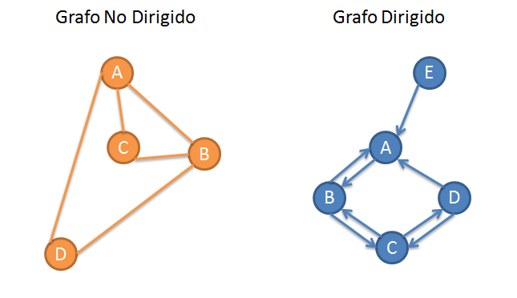

Los grafos son estructuras de datos, es decir, tipos de datos abstractos, comúnmente los grafos son utilizados para el modelado de problemas. Un grafo es un conjunto no vacıo de objetos o entes fısicos que tienen relación entre ellos.
¿Qué significa grafo dirigido? Un grafo dirigido es aquel en el que los arcos tienen un único sentido. En este caso, un arco se dirige desde el nodo origen hasta el nodo destino. Se dice que el nodo origen precede al nodo destino, y que éste sucede al origen. Los arcos de un grafo dirigido se representan gráficamente con flechas.
Un grafo no dirigido es un tipo de grafo en el cual las aristas representan relaciones simétricas y no tienen un sentido definido, a diferencia del grafo dirigido, en el cual las aristas tienen un sentido y por tanto no son necesariamente simétricas.
 REGRESAR